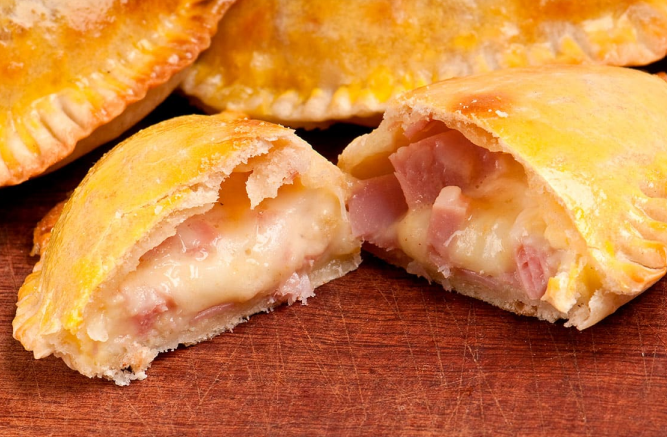
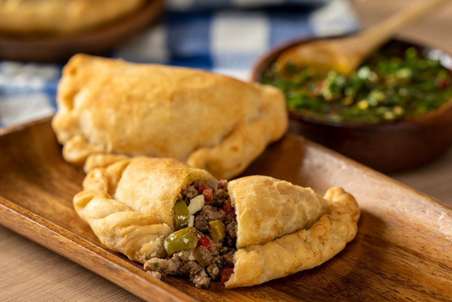
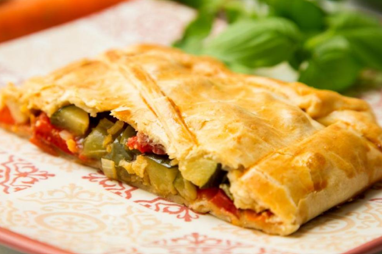

Empanadas de jamón y queso
Generalmente rellenas de jamón y queso, pueden llevar ingredientes adicionales como cebolla, pimiento y huevo duro.

Empanadas argentinas
Un tipo de empanada muy popular en Argentina, que puede tener una variedad de rellenos, incluyendo carne, pollo, jamón y queso, o verduras.

Empanadas vegetarianas
Llenas de verduras, como espinacas, champiñones, calabacín o pimientos, a menudo con queso y condimentos.
Empanadas dulces
Pueden estar rellenas de frutas, como manzana o durazno, y a menudo se endulzan con azúcar y canela.